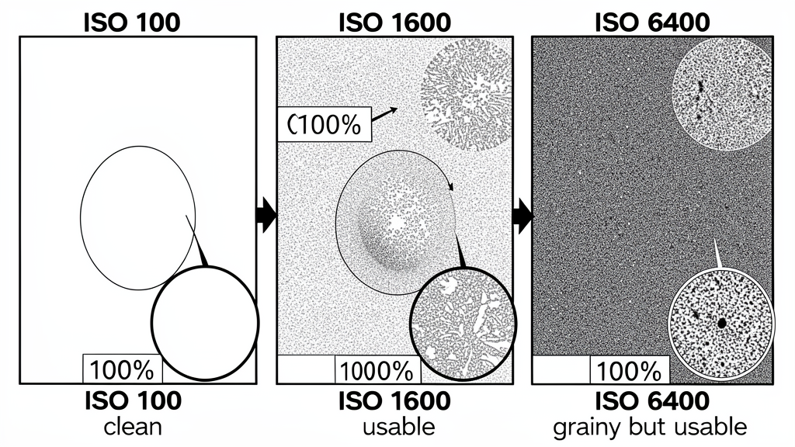

Phase 2: Exposure Triangle🤖 Together Coder (Llama 3.3 70B)150 XP
Objective
Understand ISO as brightness/gain control, recognize noise vs detail trade-off, and set Auto ISO limits.
What You'll Learn
ISO = sensor sensitivity (gain), not "sensitivity to light"
Base ISO (100) = cleanest image, max dynamic range
Higher ISO = brighter image but added grain/noise
R7 native ISO range: 100-32,000 (expandable 50-51,200)
Auto ISO with max limit = game changer for events
Modern sensors: ISO 3200-6400 still very usable on R7
📊 ISO Ruler — R7 Reality Check
50
Extended
100
Base — clean
200
Clean
400
Clean
800
Very clean
1600
Very usable
3200
Very usable
6400
Usable + NR
12800
Grainy but OK
25600
Heavy grain
51200
Emergency only

ISO comparison: clean (100) vs usable (1600) vs grainy (6400)
The ISO Trade-off
ISO 100-400: Pristine, max dynamic range, needs light
ISO 800-3200: Sweet spot for events, barely visible noise
ISO 6400: Very usable with light noise reduction
ISO 12800+: Grain becomes character, use for "the shot"
Auto ISO — Set It and Forget It
Menu → ISO speed settings → Auto ISO range: 100-6400 (or 12800)
Minimum shutter speed: 1/125 (or 1/focal length)
Camera raises ISO before dropping shutter below limit
You still control aperture (Av) or shutter (Tv)
Pro tip: Set max to 6400 for events, 3200 for portraits.
📸 R7 ISO Comparison (Mental Reference)
ISO 100
Pristine, max DR
ISO 1600
Event sweet spot
ISO 6400
Dark gym, usable
🎯 Challenge
Same scene at ISO 100, 800, 6400. Same aperture/shutter (adjust lights if needed). Crop 100% zoom. Compare: noise, detail, color. Set Auto ISO max to 6400. Shoot an event with it.